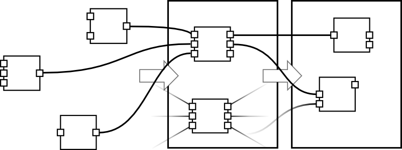
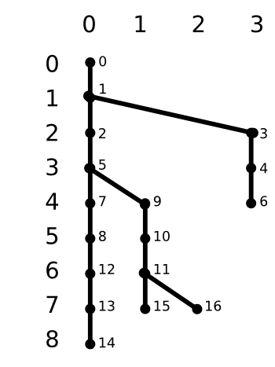

A document describing the rationale behind the database structure.
Starting with these basic rules, we design our database.
From big to small:
The block-chain is a series of blocks chained on in a linear sequence. The block-chain is an append only database of all transactions in the network.
What's accepted as true, is the chain with the highest difficulty. Difficulty is computed using a function from the 'bits' field of the block. Given an entire chain, we can calculate the difficulty using:
SELECT SUM(COMPUTE_DIFFICULTY(bits)) FROM our_chain;
Occasionally this chain of events may be conflicting when the chain splits in half because there are two next rival blocks trying to append to the current chain. Always, the chain with the highest cumulative difficulty is preferred over the others.
It can happen that more blocks build on a chain that previously had lower difficulty and so take over the main chain. This is termed a block-chain re-organisation. But as more blocks build off the main chain, that becomes exponentially less likely until eventually it becomes a near impossibility. Branches off the main block-chain can be pruned once they reach a certain depth that it's near unlikely they will ever become the main branch again.
We can represent our blocks using this schema:
blocks:
block_id
block_hash
depth -- block number in the chain
span_left
span_right
... other fields

| block_id | depth | span_left | span_right |
|---|---|---|---|
| 0 | 0 | 0 | 3 |
| 1 | 1 | 0 | 3 |
| 2 | 2 | 0 | 2 |
| 3 | 2 | 3 | 3 |
| 4 | 3 | 3 | 3 |
| 5 | 3 | 0 | 2 |
| 6 | 4 | 3 | 3 |
| 7 | 4 | 0 | 0 |
| 8 | 5 | 0 | 0 |
| 9 | 4 | 1 | 2 |
| 10 | 5 | 1 | 2 |
| 11 | 6 | 1 | 2 |
| 12 | 6 | 0 | 0 |
| 13 | 7 | 0 | 0 |
| 14 | 8 | 0 | 0 |
| 15 | 7 | 1 | 1 |
| 16 | 7 | 2 | 2 |
In the diagram above blocks are represented by black dots. The block_id is a unique identifier for each new block inserted into the database. Each of the dots above would have a unique block_id.
Depth is the vertical number on the left, and is synonymous with a block's block-number.
Span left and right indicates the range of chains that a block exists in. A block with a span_left of 0, and a span_right of 3, would exist in chains 0, 1, 2 and 3. Using a span, we can easily select a particular chain:
SELECT * FROM blocks WHERE span_left=0 AND span_right=0;
Or select the common point between a series of chains:
SELECT MAX(depth) FROM blocks WHERE span_left>=0 AND span_right<=2;
Once span_right starts to exceed a value (say 10) and the depth since the chain forked exceeds a certain value, then that chain can be pruned:
DELETE FROM blocks WHERE span_left=10 AND span_right=10;
The total span range of all blocks should equal all the number of stored chains. If we have a span of [0, 10] then there should be 11 spans from 0 to 10. A table exists to keep track of all the chains.
blockchains:
chain_id
max_depth
last_block_id
total_difficulty
Nothing unusual happens here, except that transactions can be included more than once in multiple chains. A seperate table exists to track the parents for a transaction.
transaction_parents:
transaction_id
block_id
index_in_block
transactions:
transaction_id
transaction_hash
... other fields
outputs:
parent_id -- transaction parent
index_in_parent
output_type -- normal, generated, other
address
... other fields
inputs:
parent_id
index_in_parent
previous_output_id
... other fields
A script consists of a serious of opcodes and optional data.
script_id_type = SEQUENCE
operations:
operation_id
script_id
code
data
A typical script might appear like:
| operation_id | script_id | code | data |
|---|---|---|---|
| 132 | 45 | dup | NULL |
| 133 | 45 | hash160 | NULL |
| 134 | 45 | special | 89 ab cd ef ab ba ab ba ab ba ab ba ab ba ab ba ab ba ab ba |
| 135 | 45 | equalverify | NULL |
| 136 | 45 | checksig | NULL |
To fetch the script:
SELECT * FROM operations WHERE script_id=45 ORDER BY operation_id ASC;
This will be stored in memory for now as there are potential attack vectors to serialising inv items. An attacker could cause many disk read/writes by spamming a host potentially. More thought needs to go into this later.
A convenience table is provided for the end user to read the block-chain transaction history. It contains the currently accepted version of the truth. It provides a way for the user to quickly query transactions and see funds in addresses.
The inputs and outputs are joined in a view. All the outputs which are final and have not been spent, would have no equivalently joined on input.